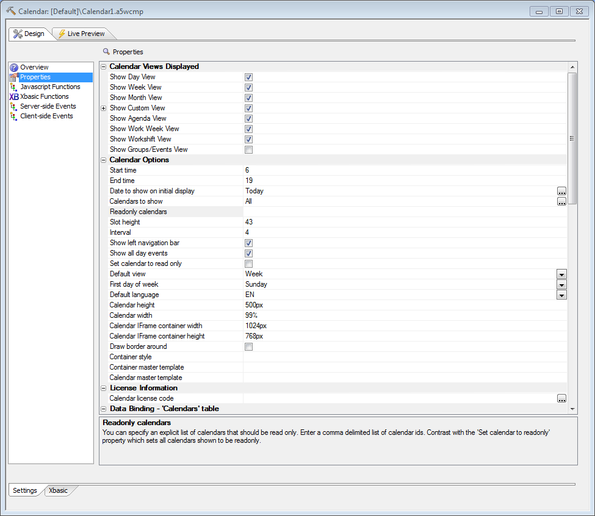
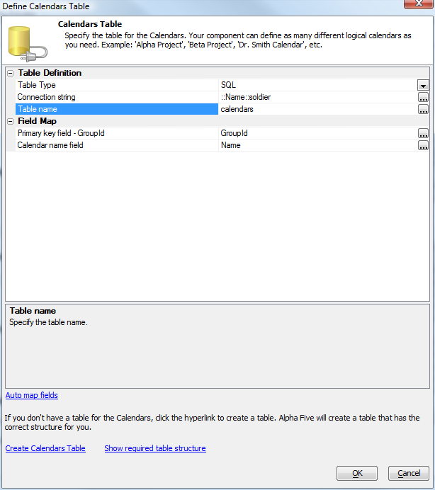
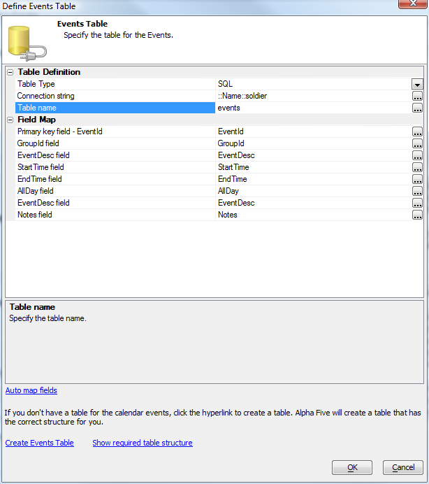
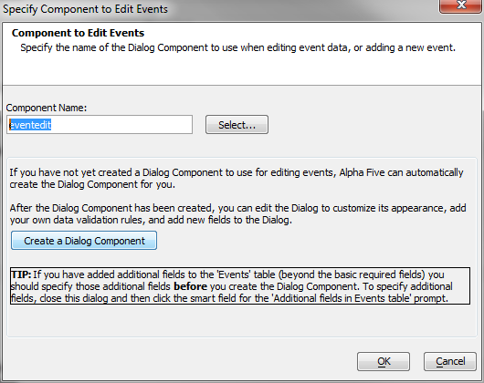
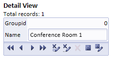
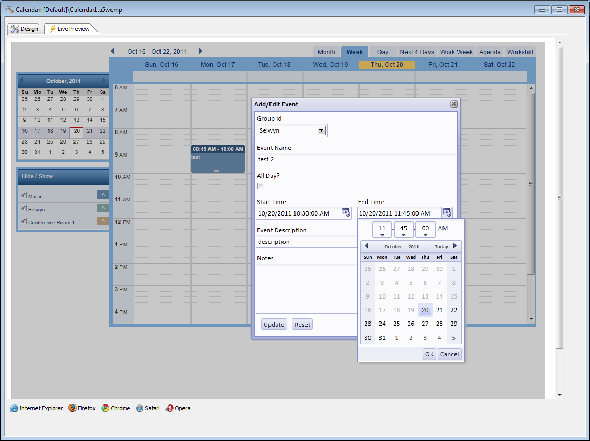
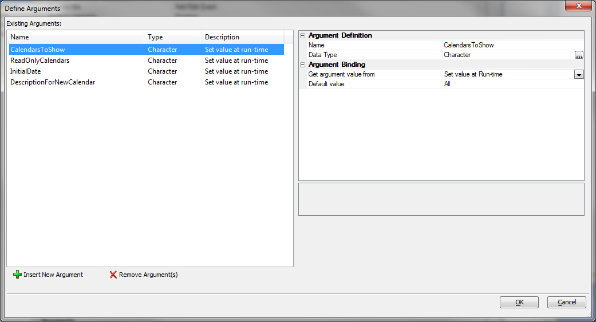
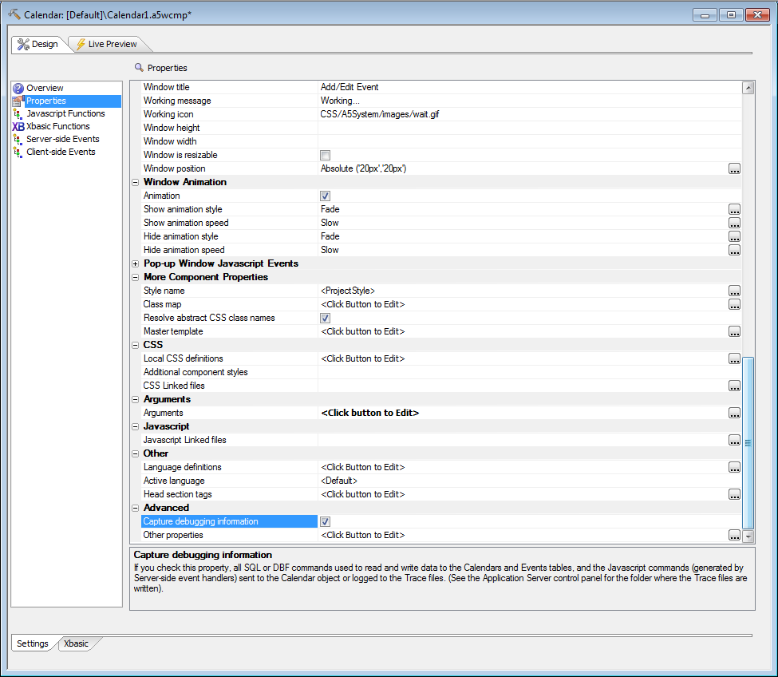
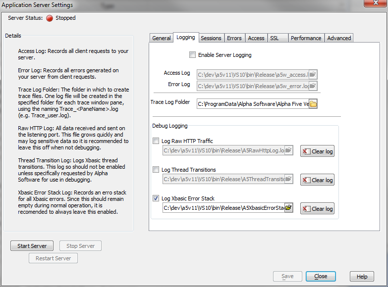

Calendar Component
Optional feature pack, included in subscription; requires an additional 3rd-party license that is not included in a subscriptionThe Calendar Component is a simple yet powerful web component that gives you an events calendar to with 8 different views, a drag and drop interface, easy integration with other Alpha Five components, and easy binding to your SQL or DBF databases.
Start by creating a new calendar component and setting the desired properties.

The four critical setup steps are to define and map to a calendar table,

define and map to an events table,

create an event editing dialog component,

and add one or more calendars to the calendar table, either by working directly in the database or by building and using an Alpha Five Grid or Dialog component for editing the calendar table.

At that point you can save and run your calendar locally.

The calendar currently supports English (EN), French (FR), Italian (IT), and Spanish (SP).
Licensing your calendar
Before you can publish your calendar to a site for general use you will need to buy a license to allow it to run on that site, and enter the license number into the calendar properties. If you do not purchase a calendar license, your calendar will only run on localhost and 127.0.0.1.Using Calendar arguments
When launching the Calendar from a Grid or another component, you will want to set one or more of the Calendar's arguments, to control what is displayed dynamically.
Debugging your calendar serialization
An option in the Calendar Component builder allows you to turn on debugging information.
If this option is enabled, debugging information is written to the Trace folder (see the Application Server control panel for information on where the Trace folder is located).

Videos
| Number | Category | Description |
| Cal1 | Overview of the Calendar Component | The Calendar component allows you to display 'events' or
'appointments' in a Calendar view. This video gives a quick overview of
the features of the Calendar component. In a subsequent video we show
how to set up the Calendar component.
|
| Cal2 | Setting up the Calendar Component | This video shows the steps to get started to set up and use a
Calendar component in your application.
|
| Cal3 | Dynamically Creating New Records in the Calendars Table | When the Calendar Component is opened, it can be configured to only
display the events for a particular calendar.
For example, you might have an 'Employees' table and you might have a Grid which shows the records in the Employees table.
A button in each row of the Grid opens the Calendar Component showing the appointments for that particular Employee. However, if there is no matching record in the Calendar table for the Employee, it would be convenient to automatically create a new record in the Calendars table before opening the Calendar.
This video shows how this is easily done.
|
| Cal4 | Opening the Calendar Component and Showing a Selected List of Calendars | When the Calendar Component is opened from a button in a Grid or
Dialog component, you can specify which calendars (i.e. the calendar for
Dr. Jones, Dr. Smith, etc.) should be shown on the Calendar.
This video shows how you can read the list of calendars to show from a column in the Grid. (Requires build 3823 or above) |
| Cal5 | Opening the Calendar Component and Showing a List of Related Calendars | Assume that you have a Grid that contains a list of people for which
calendars have been defined. When you click a button to open the
Calendar Component for a particular person, you would like to see the
calendars for 'related' people as well. In addition, you would like the
'related' calendars to be read-only, while the main calendar is
updateable.
This video shows how you can define a 'link table' that indicates what the 'related' calendars are for each calendar. For example, whenever the calendar for Dr. Smith (id = 3) is shown, you also want to see the calendars for Dr. Jones (id = 27) and Dr. King (id = 33).
This video shows how this can be done by putting a Linked Content Section in the main Grid. The Linked Content Section shows the Grid based on the 'link table'. (Requires build 3823 or above)
|